Systematic Multi-Strategy Backtest Report
A backtest is a simulation. We take a trading strategy, feed it 10 years of real historical stock prices, and watch what would have happened if we'd followed that strategy every day — automatically, with no emotions. The goal is to see whether the strategy would have made money before risking real cash on it.
Think of it like a flight simulator for trading. It's not a guarantee of future results, but it's a much safer way to evaluate an idea than just jumping in.
⚠️ Important caveat: Real trading involves psychological pressure, taxes, larger transaction costs, and the fact that once everyone knows about a strategy, it stops working. Past backtested results are not a promise of future returns.
Think of a rubber band. When a stock price gets stretched too far in one direction, this strategy bets it'll snap back. It buys stocks that have fallen unusually far and sells (shorts) stocks that have climbed unusually high. Works best in calm, sideways markets.
Surf the wave. If a stock has been rising, keep riding it up. If it's been falling, avoid it (or bet against it). Like a train that tends to keep moving once it gets going. Works best during strong market trends.
Play two stocks off each other. Find two companies that tend to move together (e.g., two big banks). When one gets ahead of the other, bet they'll realign — buy the laggard, sell the leader. This strategy doesn't need the market to go up or down — it just needs the gap to close.
Advanced math-based mispricing detector. Uses a technique called PCA (Principal Component Analysis) to strip out broad market moves from each stock's price. Whatever's left — the 'unexplained' part — is traded when it drifts too far. Think of it as finding tiny mispricings across dozens of stocks simultaneously.
A stock report card. Every stock gets graded on four qualities: trend (is it going up?), value (is it cheap?), stability (does it move smoothly?), and profitability (is the company healthy?). The top-ranked stocks are bought; the bottom-ranked are sold. Inspired by academic research from Fama and French.
The simplest strategy that actually has a long track record. Rule: if a stock's price is above its 200-day average, hold it. If it drops below, sell and hold cash. That's it. During a bear market most stocks fall below their averages, so the strategy automatically moves toward cash and avoids the worst crashes.
The economy runs in cycles — tech booms, then energy leads, then healthcare is defensive. This strategy ranks the five sectors (tech, finance, healthcare, energy, consumer) by their 3-month return, then puts all money into the top two. If all sectors are losing, it stays in cash. Rebalances every month.
Buy stocks making new yearly highs — they tend to keep going. Psychology: when a stock hits a price it hasn't been at in a year, it often has strong momentum behind it. Entry: new 52-week high with high volume. Exit: either an 8% stop-loss (if it turns), or after 20 trading days (harvest the gain).
The best-performing strategy was Sector Rotation with a total return of 349.6% (16.3%/year on average). It outperformed the S&P 500 benchmark (190.2% total).
The most stable strategy was Iren (B&H), whose worst losing streak from peak to trough was only -98.2% — much smaller than the others.
The SPY benchmark is the simplest possible strategy: just buy and hold the S&P 500 index. It returned 190.2% (11.3%/year) with a Sharpe of 0.41. Beating it consistently is the bar that even most professional fund managers fail to clear.
The IREN benchmark is a buy-and-hold of IREN (Iris Energy), a Bitcoin mining company listed since late 2021. It returned -95.9% (-64.1%/year) with a Sharpe of -0.28 and a max drawdown of -98.2%. Crypto-adjacent stocks like IREN can produce dramatic gains or losses — high reward but extremely high risk.
| Term | What it means in plain English |
|---|---|
| Total Return | How much money the strategy made (or lost) over the entire test period. +35% means $100k grew to $135k. -28% means it shrank to $72k. |
| CAGR | Compound Annual Growth Rate — your average yearly return. Like an interest rate that compounds. 10% CAGR means your money roughly doubles every 7 years. |
| Annual Volatility | How wildly the portfolio swings day-to-day, measured per year. Low = smooth ride. High = stomach-churning ups and downs. The S&P 500 is typically ~15–20%. |
| Sharpe Ratio | Return per unit of risk. Above 1.0 = good. Above 2.0 = excellent. Below 0 means you'd have been better off in a savings account. It's the single most commonly used measure of risk-adjusted performance. |
| Sortino Ratio | Like the Sharpe Ratio, but only penalises downside swings (bad volatility). A strategy with big gains but few big losses scores better here than on Sharpe. |
| Max Drawdown | The worst peak-to-trough loss you would have experienced. If it's -50%, your portfolio once fell by half before recovering. Think: could you sleep through that without panic-selling? |
| Max Drawdown Duration | How many days the portfolio spent underwater — below its previous peak. A 2-year duration means you'd have waited 2 years just to get back to even. |
| Win Rate | The percentage of trading days (or trades) that made money. 50% is a coin flip. Profitable systems can win with less than 50% if their winners are much bigger than their losers. |
| Profit Factor | Total profits divided by total losses. 1.5 means for every $1 lost, $1.50 was made. Above 1.0 = profitable overall. Below 1.0 = losing money. |
| VaR 95% | Value at Risk — on a typical bad day (the worst 5% of days), how much might you lose? A VaR of 1% means there's a 5% chance of losing more than 1% in a single day. |
| Skewness | Whether bad days are worse than good days are good, or vice versa. Negative skew (common in trading) means rare but severe crashes. Positive skew means occasional big wins. |
| Kurtosis | How often extreme moves happen. Higher kurtosis = more 'fat tails' — more frequent dramatic crashes or spikes than a normal distribution would predict. |
| Kelly Fraction | A formula for how much of your capital to bet per trade for optimal growth. In practice, most traders use half-Kelly or less. A negative Kelly means don't bet at all — the edge is negative. |
| Information Ratio | How consistently the strategy outperforms the benchmark. Higher = more reliably beating the market rather than just occasionally. |
| Metric | mean_reversion | momentum | pairs_trading | stat_arb | multi_factor | trend_200 | sector_rotation | breakout | IREN (B&H) | combined | Benchmark |
|---|---|---|---|---|---|---|---|---|---|---|---|
| Total Return | 0.00% | -4.80% | 0.46% | -57.40% | 35.19% | 251.61% | 349.55% | 90.50% | -95.85% | 34.34% | 190.19% |
| CAGR | 0.00% | -0.49% | 0.05% | -8.19% | 3.07% | 13.43% | 16.25% | 6.67% | -64.14% | 3.00% | 11.27% |
| Annual Vol | 0.00% | 13.74% | 3.69% | 8.79% | 13.04% | 15.02% | 19.26% | 9.44% | 121.79% | 4.48% | 17.68% |
| Sharpe Ratio | 0.000 | -0.332 | -1.326 | -1.498 | -0.086 | 0.582 | 0.619 | 0.202 | -0.279 | -0.433 | 0.410 |
| Sortino Ratio | -15.875 | -0.400 | -1.360 | -1.449 | -0.149 | 0.529 | 0.563 | 0.175 | -0.630 | -0.417 | 0.329 |
| Calmar Ratio | 0.000 | -0.013 | 0.003 | -0.139 | 0.124 | 0.454 | 0.622 | 0.379 | -0.653 | 0.350 | 0.315 |
| Max Drawdown | 0.00% | -37.00% | -14.31% | -58.75% | -24.79% | -29.58% | -26.12% | -17.58% | -98.25% | -8.58% | -35.75% |
| VaR 95% | -0.0000% | 1.1217% | 0.3278% | 0.9032% | 1.2823% | 1.5105% | 1.8775% | 0.8608% | 11.0848% | 0.4534% | 1.6920% |
| CVaR 95% | -0.0000% | 1.9739% | 0.5455% | 1.3129% | 1.9924% | 2.4579% | 2.9347% | 1.5654% | 14.6310% | 0.6896% | 2.7687% |
| Win Rate | 0.00% | 50.97% | 45.92% | 46.72% | 47.75% | 51.05% | 52.88% | 46.96% | 45.65% | 52.72% | 54.59% |
| Profit Factor | inf | 1.01 | 1.01 | 0.85 | 1.06 | 1.19 | 1.18 | 1.16 | 0.96 | 1.13 | 1.14 |
| Kelly f* | 0.000 | 0.237 | 0.836 | -5.000 | 2.277 | 5.000 | 4.563 | 5.000 | -0.196 | 5.000 | 3.919 |
| Skewness | nan | 0.923 | -0.751 | -0.200 | -0.421 | -1.073 | -0.508 | -1.072 | 0.597 | -0.584 | -0.800 |
| Kurtosis | nan | 42.930 | 13.709 | 3.420 | 12.931 | 7.198 | 8.630 | 9.316 | 4.281 | 4.832 | 13.634 |
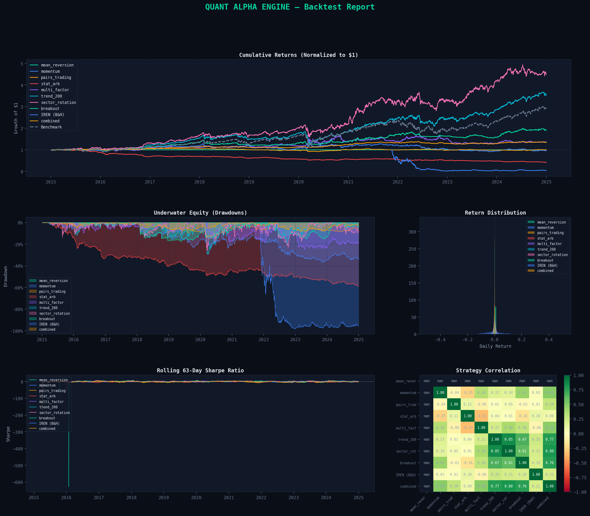
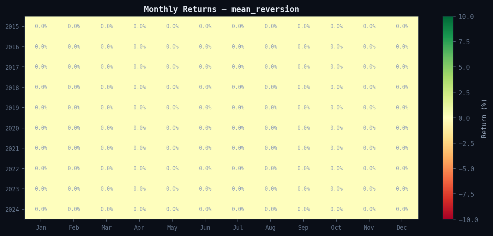
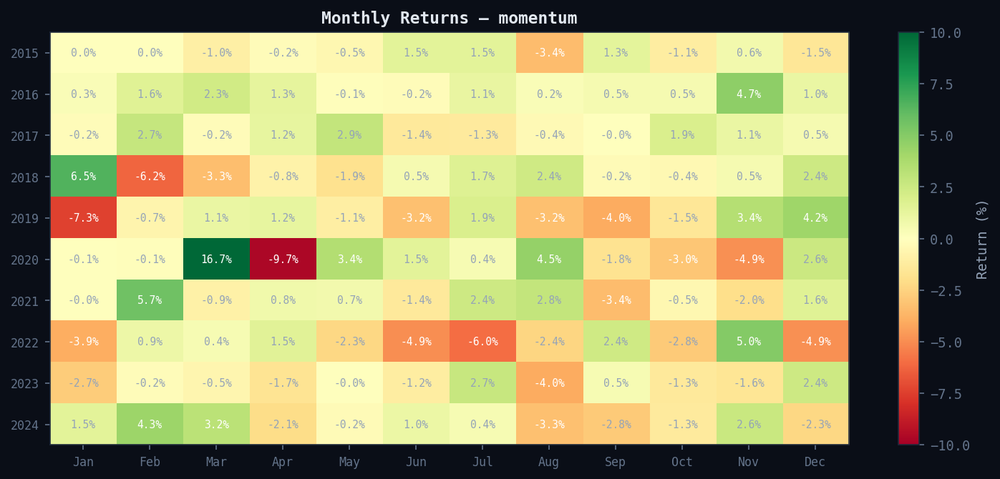
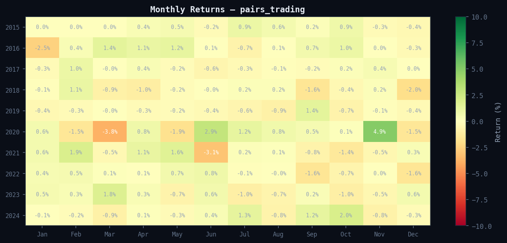
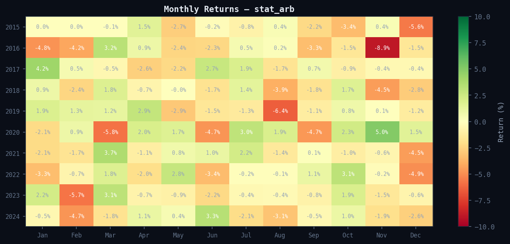
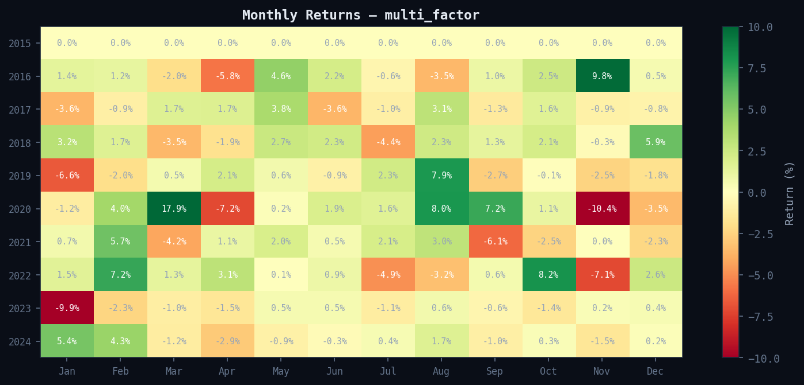
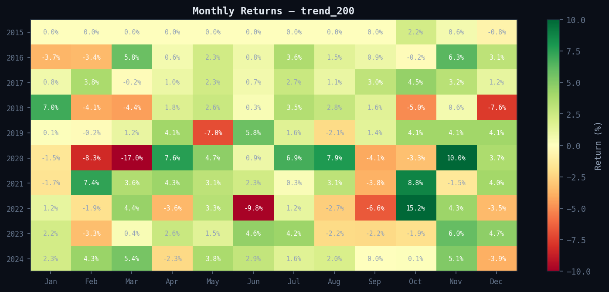
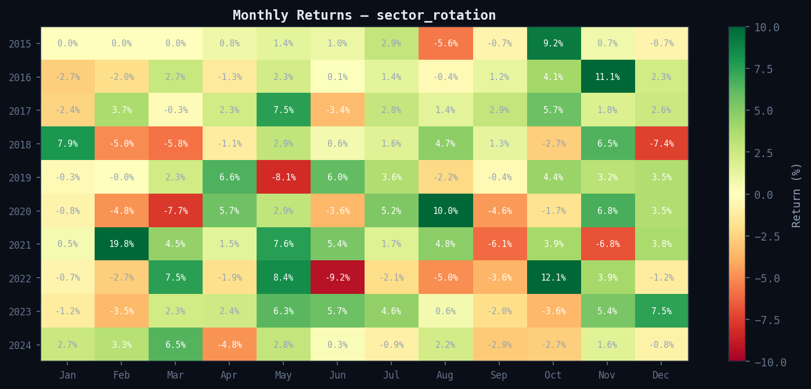
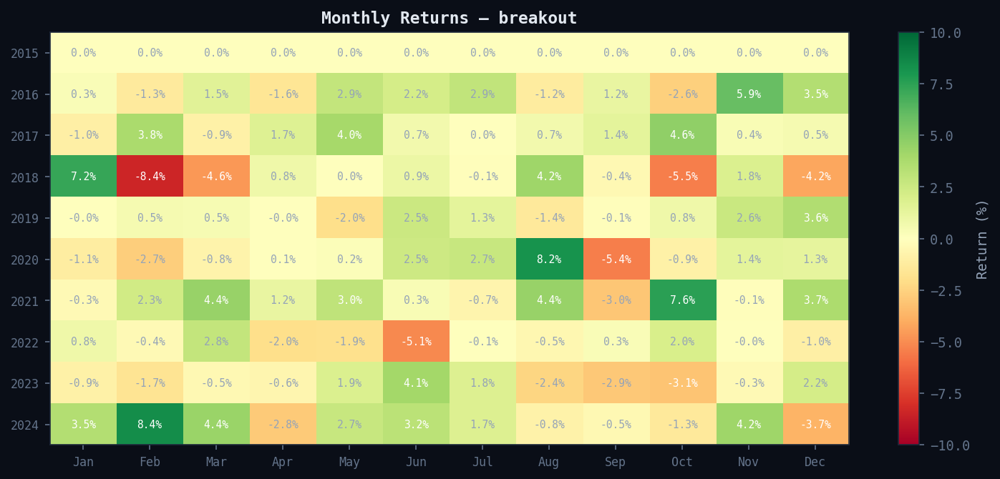
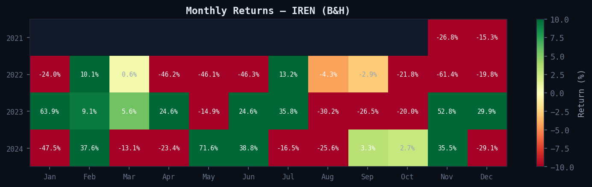
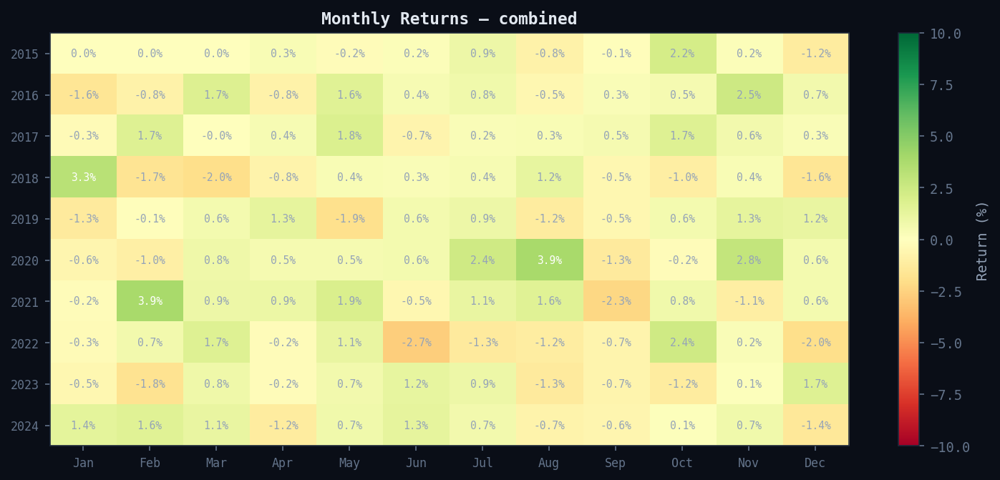
Generated by Quant Alpha Engine • For educational/research purposes only